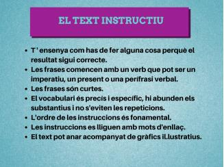

Pel dilluns 20 d'abril (ANGLÈS):
S'han de fer les pàgines 110,11,112 i 113 del WB i enviarles al google classroom
les instruccions per poder entrar al llibre digital
S'han de fer les pàgines 110,11,112 i 113 del WB i enviarles al google classroom
les instruccions per poder entrar al llibre digital
Llegir el llibre Dead Man's Island i fer les activitats del finall del llibre a mà, i finalment adjuntar al google classroom la foto de la feina
Fes clic aqui per obrir el solucionari del llibre amb les activitats solucionades, per a poder comprovar si ho has fet correctament
Para ayudar a futuros lectores de La casa de Bernarda Alba, elabora un VOCABULARIO con las definiciones de 25 palabras extraídas de la lectura y cuyo significado consideres que requiera explicación. Indica el acto donde aparece cada una de ellas.
Asegúrate de que eliges la acepción adecuada al contexto de entre los significados que te ofrezca el DRAE y comprueba que lo que anotes esté correctamente escrito.
Si todavia no tienes el libro, lo puedes adquirir aqui
Aquesta setmana ens toca treballar el text instructiu. Us proposo que escriviu (en format paper o digital) tot un seguit d’instruccions per tal d’evitar el contagi del Coronavirus.
Us recordo com heu de crear el text instructiu.
Aquesta activitat s'ha d'enviar al correu: marbi.mcarme@gmail.com
En cas de no tindre correu, s'ha de guardar en una carpeta classificadora
Com que això del confinament va per llarg la feina que us proposo és que us mantingueu actius fent petits entrenaments. Els entrenaments poden ser com els que vam fer al primer trimestre. Per ajudar-vos, al final d'aquest missatge us poso un link a una carpeta de drive on aniré penjant diferents entrenaments. La vostra feina serà fer almenys 2 entrenaments a la setmana i enviar-me un vídeo per setmana on es pugui veure que esteu fent els entrenaments. Els vídeos han de ser curts (30 segons aproximadament).
El link que us poso us dona accés a 2 carpetes, una d'entrenaments i l'altra de vídeos. A la carpeta de vídeos podeu veure'n alguns a mode d'exemple.
Aniré penjant cada 2 o 3 dies entrenaments. Ara mateix hi ha 4 sessions d'entrenament. Us passo el link per si els voleu consultar: CARPETA ENTRENAMENTS
El meu mail per si necessiteu alguna cosa: dlabrado@xtec.cat
Continuar llegint el llibre de la ladrona de libros.
Aneu a la següent pàgina web sobre la setmana santa que us he preparat i visualitzeu-la al complet. Al final hi ha activitats per a fer durant els pròxims dies.
Codi del google classroom: w4r5mjg
- Ex 106, 107, 108, 109 de la p.197. Adjuntar foto al google classroom
- Quadre has de saber fer de la pàgina 197. Adjuntar també foto al classroom
- Autocorrecció de les activitats que eren per la setmana anterior i posteriroment adjuntar les fotos al google classroom; la correcció és a sota
- Per a poder comprovar si ho has fet bé pots utilitzar el solucionari
Usuari: 43007658-0031-0001
Contrasenya: 8N3KuqPK
L'assignatura socials no té tasques pendents, pots visitar el seu taulell de google classroom aquí